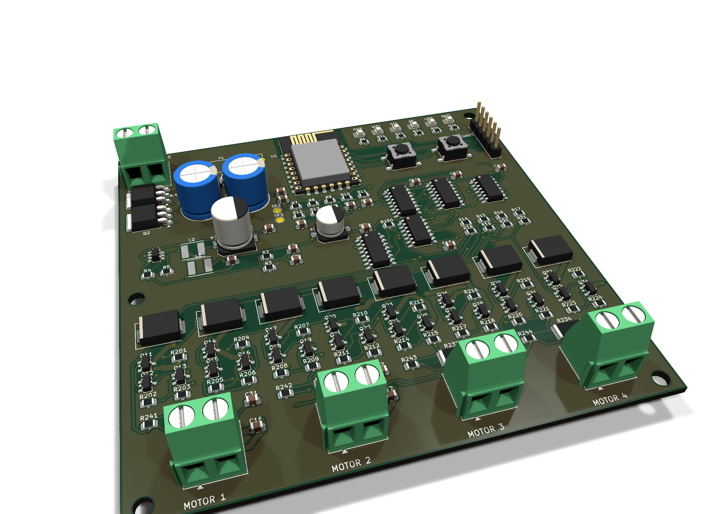
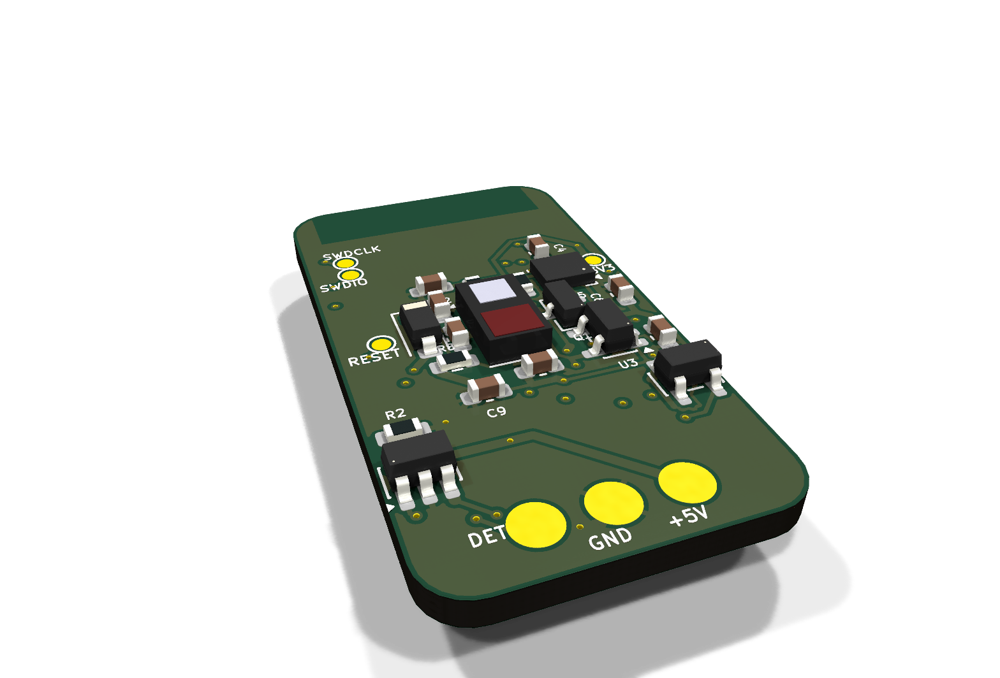
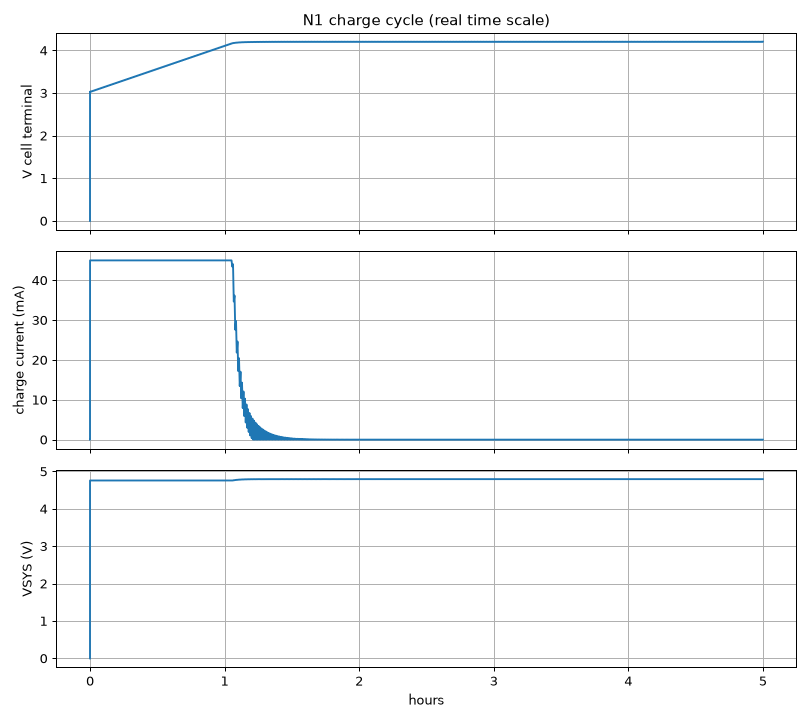
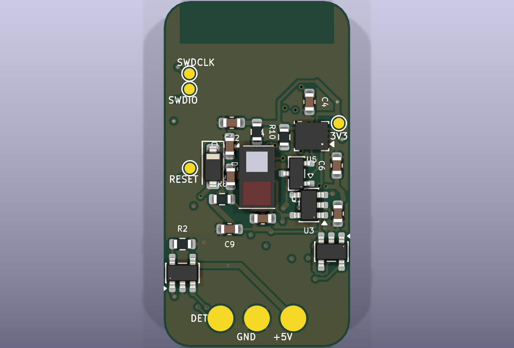
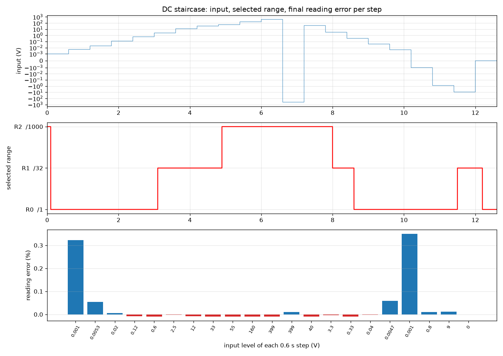
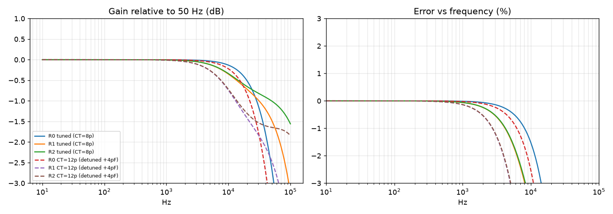
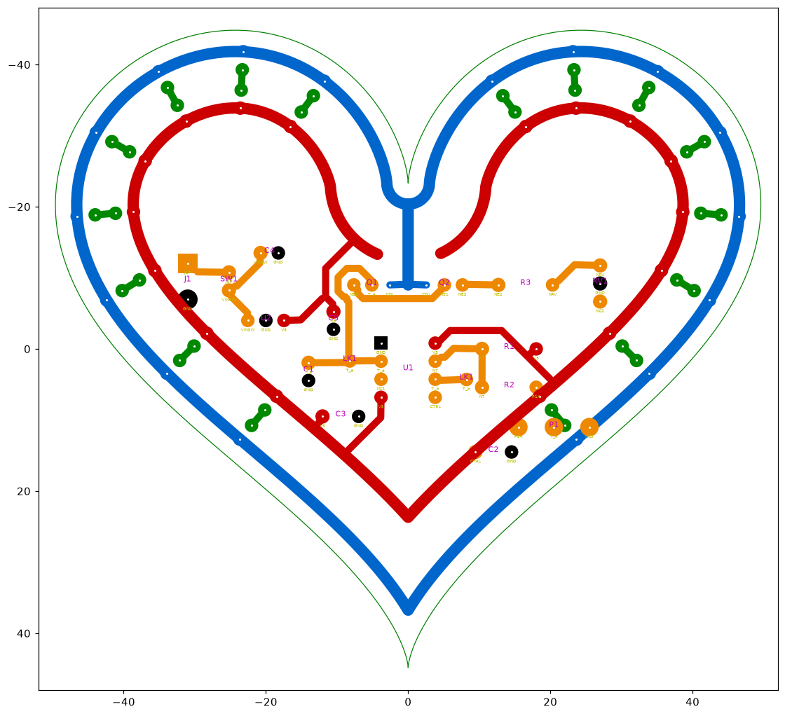
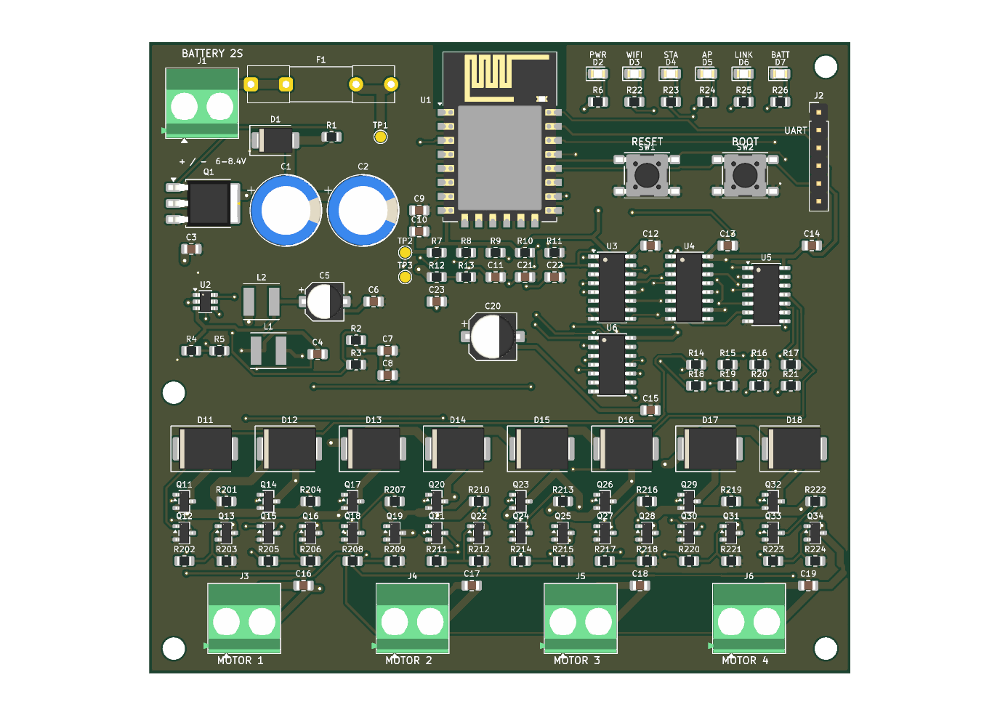
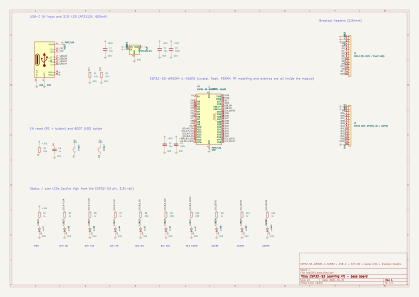

Firmware + control
Peltier temperature controller
STM32F411 reads a PT100 through a MAX31865, runs a PID loop toward a 15 °C setpoint and drives a 25 kHz PWM. Live telemetry streams over USB. I documented why 15 °C needs a cooler, not a heater.
Wearables, motor drivers, measuring instruments, STM32 and ESP32 gadgets. I draw the circuit, simulate the risky parts, lay out the PCB, and even model the case. Below are real projects from my desk, including the things that went wrong.

The three big ones first. Each one says honestly how far it got.



A tiny band pod that tracks heart rate, SpO2 and motion over Bluetooth. Everything fits on a 4-layer board of 17 x 32 mm: an nRF52840 module, a MAX30102 optical sensor, an LSM6DSL motion sensor, a LiPo charger and two clean power rails. It charges from a little dock with pogo pins.
I also modelled the 3D-printable case, strap passage and dock in OpenSCAD and checked the fit against the real board.



A front end with three zero-drift op-amp buffers, a 10 megaohm input and a 24-bit delta-sigma ADC. The MCU picks the range on its own and works out true RMS in software, so even 1 mV AC reads cleanly. I wrote a Python script that builds the whole LTspice circuit, so changing a value is one edit.
The same thinking went into a smaller BLE pocket multimeter (M1) that sends readings to a phone.


Four DC motors controlled over Wi-Fi from a 2S Li-ion battery. Each motor has its own H-bridge made of discrete MOSFETs, with reverse-battery protection, a surge clamp and a 3.3 V buck supply. Six little LEDs show power, Wi-Fi, link and low battery.
I ran LTspice on shoot-through, noise, supply filtering and current sensing before routing, then added filters so motor noise can't reset the ESP.
Smaller builds, firmware and experiments.
STM32F411 reads a PT100 through a MAX31865, runs a PID loop toward a 15 °C setpoint and drives a 25 kHz PWM. Live telemetry streams over USB. I documented why 15 °C needs a cooler, not a heater.
A 1 kHz PWM is read back through an RC filter and the ADC, then drawn as a scrolling trace on a 1.69" ST7789 display. SPI sped up to 18 MHz so redraw feels smooth.
STM32F411 Black Pill project that generates PWM on a timer and reads it back through the ADC, with a guide on voltage ranges and scaling.
BLE experiments plus drivers for an accelerometer, TMP117 temperature, TCS34725 colour and SpO2 sensors.
Bring-up of the 16-bit simultaneous-sampling AD7606 with STM32.
Base boards with LEDs for Wi-Fi and BLE state, USB-C, and every spare pin on headers, with a full pin map. Schematic and ERC done.
A heart PCB with a ring of LEDs that fade, laid out by script. Layout sketch only so far, but it shows I like making boards look nice, not just work.
I make short videos explaining circuits, like the floating MOSFET gate, on Instagram as @themindmodules. Handy if you need demo clips for your product.
Schematic and netlist generators, auto-routing runs and DRC checks, so revisions take hours, not days.
Not only PCBs. A product needs more than a board.
Schematics, 2 to 4 layer layout in KiCad, ERC and DRC, Gerbers, BOM, pick-and-place.
LTspice for power stages, filters, chargers, ADC front ends. You see proof before you pay for boards.
STM32 (F4, G4, WB), ESP32, nRF52840, Arduino. Pin maps, boot modes, bring-up firmware.
Tiny boards, LiPo charging, optical heart-rate sensors, motion sensors, charging docks.
TFT and OLED interfaces, status LED rows, fast SPI drawing.
Buck supplies, battery protection, H-bridge motor drivers, PID temperature control.
Parametric OpenSCAD cases and docks with real fit checks, ready for printing.
Clear design notes, pin tables and short explainer videos for your team or customers.
No surprises, short messages, files you can open.
Size, power, parts, budget. A napkin sketch is fine.
You get the schematic and the key plots first.
PCB, DRC clean, 3D check against the case.
Gerbers, BOM, source files, a plain-English notes file.
Send me a message with what it must do. I'll tell you honestly what it will take, or if someone else would suit you better.